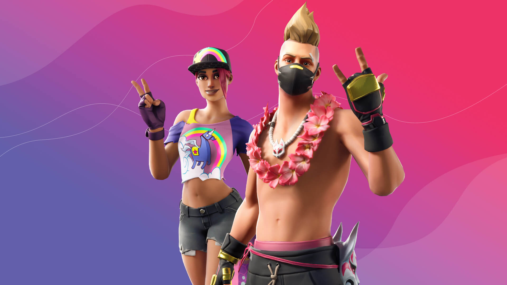

DIVE INTO FORTNITE SUMMER SPLASH 2020!
6.30.2020
By The Fortnite Team
With the flood turning the entire Island into a waterfront destination, it’s time to grab your swimsuit, an ice-cold jar of Slurp Juice, and dive into the Summer Splash.
From now until the end of Season 3, drop into a rotation of classic LTMs along with some new ones. There are also new and favorite Item Shop Outfits arriving — tailor-made for an Island getaway.

FUN IN THE SUN: CLASSIC & NEW LTMS
Throughout Summer Splash, enjoy a rotation of LTMs such as Fog of War (formerly Sneaky Silencers), Close Encounters, Unvaulted, Catch! and more. You'll also notice these classic LTMs getting some Summer Splash refreshment with some new features.
Brand new LTMs will kick off in a future update and include new takes on Operation: Knockout, a reel ‘em in royale, and a game of elimination-powered upgrades.
SUMMER VIBES: NEW OUTFITS AND MORE
Summer Splash will also feature new Outfits and other Item Shop items inspired by all things summer: sand, sea, sports, and — of course — good food. Dial-in your fairway drive as golf expert Par Patroller, shark-suit up as Cozy and Comfy Chomps, resemble the constellations as Starflare, and more.
The summer heat also heralds the return of both Summer Drift and Beach Bomber for the festivities.
Whether you live in the Northern or Southern Hemisphere, come join us in a sunny celebration in Fortnite!